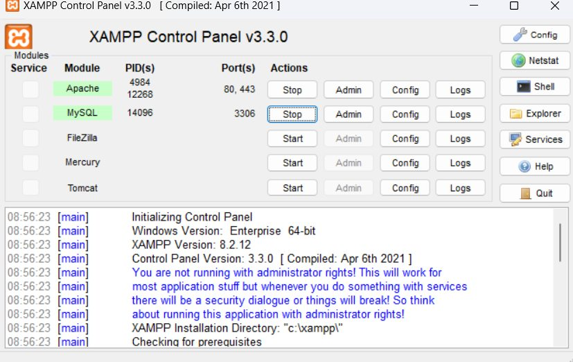
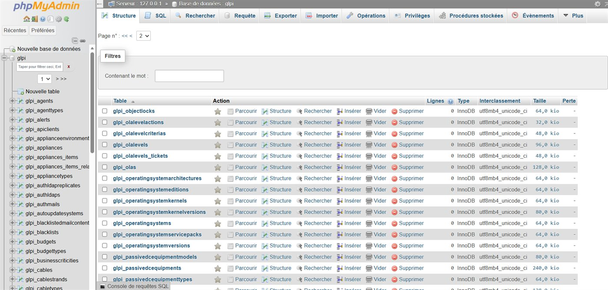
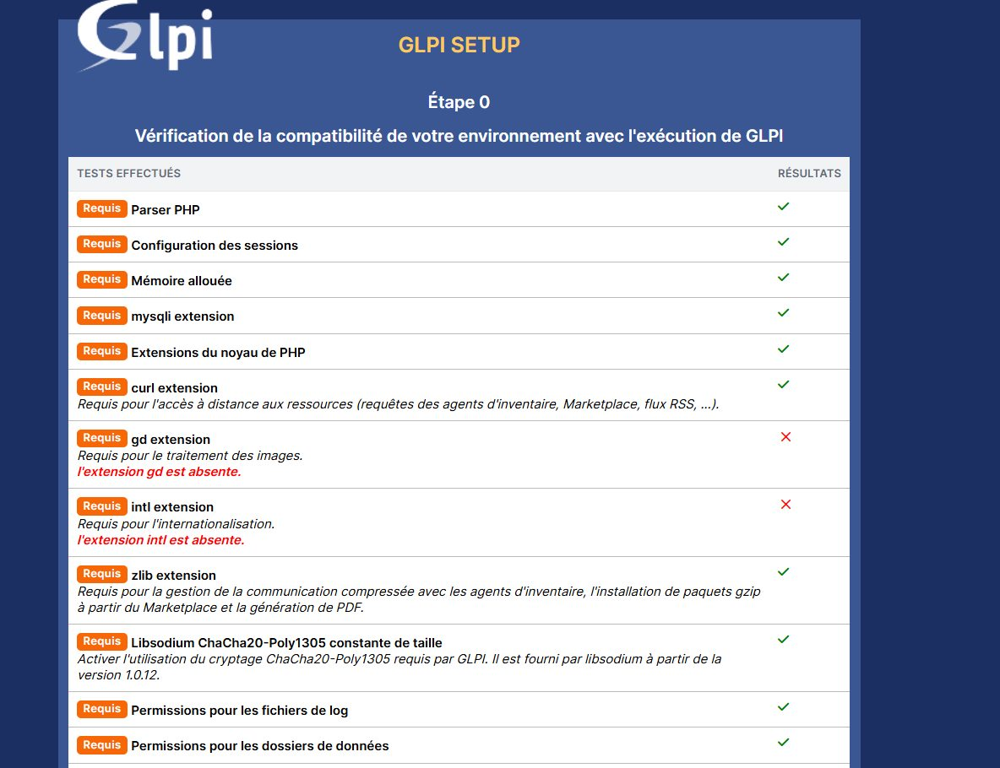
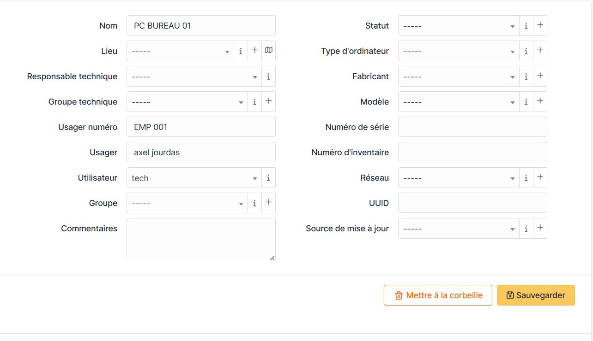
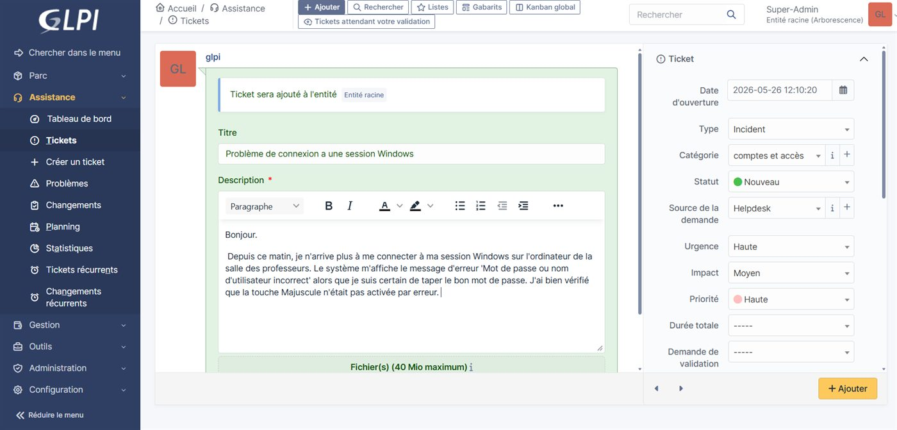
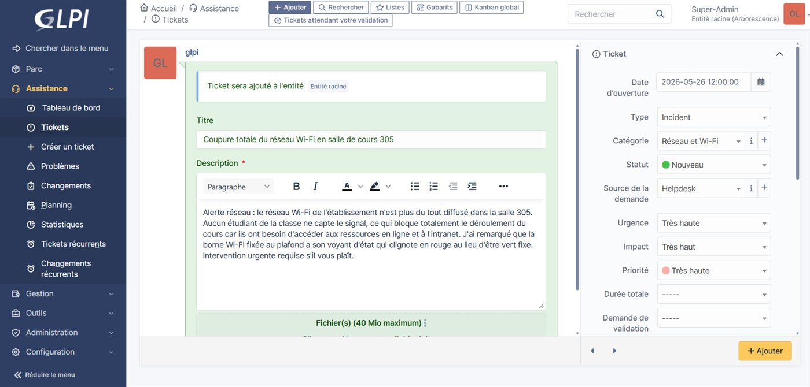
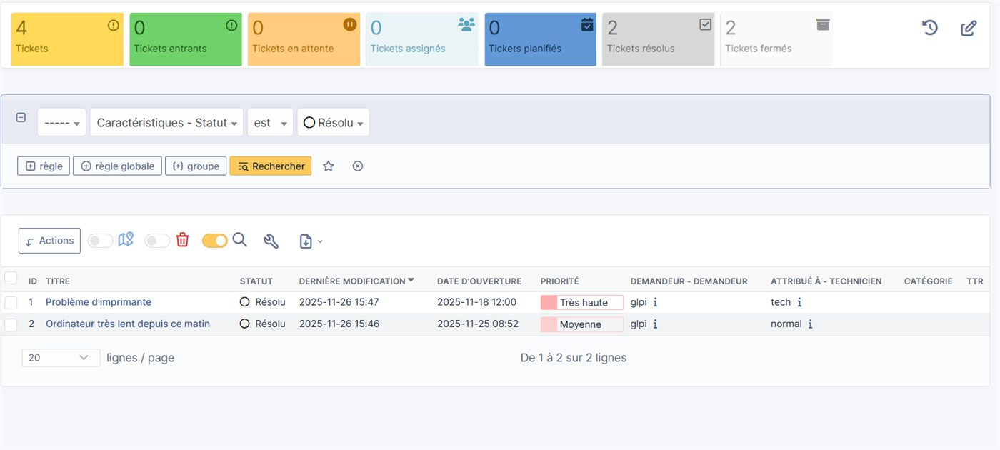
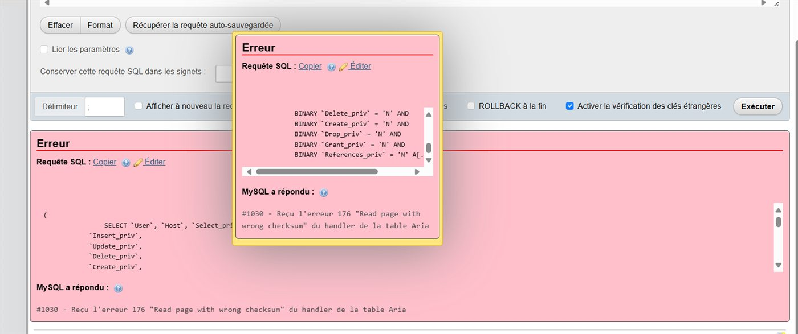

Contexte
Dans un établissement, les demandes arrivent par téléphone, par mail ou dans le couloir, et se perdent. GLPI centralise l'inventaire du matériel et les demandes d'assistance : chaque incident devient un ticket suivi, priorisé et documenté.
J'ai travaillé sur GLPI à deux reprises : une première installation en BTS SIO 1, avec l'inventaire du parc et le plugin FusionInventory, puis un TP plus complet en mai 2026 sur l'organisation d'un centre de support.
Déploiement
GLPI est une application web : elle tourne sur un serveur et chacun y accède par son navigateur, sans rien installer sur son poste.
| Brique | Rôle |
|---|---|
| Apache | Serveur web : reçoit les requêtes HTTP et renvoie les pages |
| PHP | Exécute le code de GLPI et génère les pages dynamiques |
| MariaDB | Stocke les tickets, les utilisateurs, l'inventaire et l'historique |
-- Base dédiée, encodage complet (accents, caractères spéciaux) CREATE DATABASE glpi CHARACTER SET utf8mb4 COLLATE utf8mb4_unicode_ci; -- Utilisateur dédié plutôt que root : moindre privilège CREATE USER 'glpiuser'@'localhost' IDENTIFIED BY '********'; GRANT ALL PRIVILEGES ON glpi.* TO 'glpiuser'@'localhost'; FLUSH PRIVILEGES;
Si GLPI était compromis, l'attaquant n'aurait accès qu'à la base glpi, pas à toutes les bases du serveur comme avec le compte root.




Organisation du support
Comptes et profils
enseignant1,admin1: profil utilisateur (Self-Service), ils déclarent des demandestechnicien1: profil Technicien, il prend en charge et résout
Un utilisateur ne voit que ses tickets. Le technicien a accès aux outils de suivi.
Catégories de tickets
Les catégories orientent le ticket vers la bonne personne et servent aux statistiques.

Cycle de vie des tickets
Création → qualification → affectation → suivi → résolution → clôture. Quatre scénarios ont été traités :
| Ticket | Type | Catégorie | Priorité | Solution |
|---|---|---|---|---|
| Impossible d'ouvrir la session Windows | Incident | Compte et accès | Haute | Mot de passe réinitialisé dans l'AD, reconnexion vérifiée |
| Configurer l'imprimante multifonction (salle B) | Demande | Matériel | Moyenne | Imprimante déployée, code d'impression transmis de façon sécurisée |
| Coupure totale du Wi-Fi en salle 305 | Incident | Réseau et Wi-Fi | Très haute | Redémarrage PoE de la borne depuis le switch, signal vérifié |
| Installer Packet Tracer (salle 112) | Demande | Logiciel | Basse | Déploiement centralisé sur tous les postes, installation vérifiée |



Démo : urgence × impact = priorité
Dans GLPI, la priorité n'est pas choisie au hasard : elle se calcule à partir de l'urgence (le délai acceptable) et de l'impact (le nombre de personnes touchées). Cliquez sur une case :
Choisissez une combinaison pour voir la priorité obtenue.
Problèmes rencontrés

Bilan
Compétences mobilisées
- Installation d'une application web (Apache, PHP, MariaDB)
- Gestion du parc et inventaire
- Traitement et priorisation des incidents
- Rédaction de solutions et base de connaissances
Ce que j'en retiens
- Un ticket clôturé sans solution détaillée, c'est du savoir perdu.
- Une base de connaissances simple fait baisser le nombre de tickets.
- En production : HTTPS, sauvegardes et comptes robustes sont indispensables.